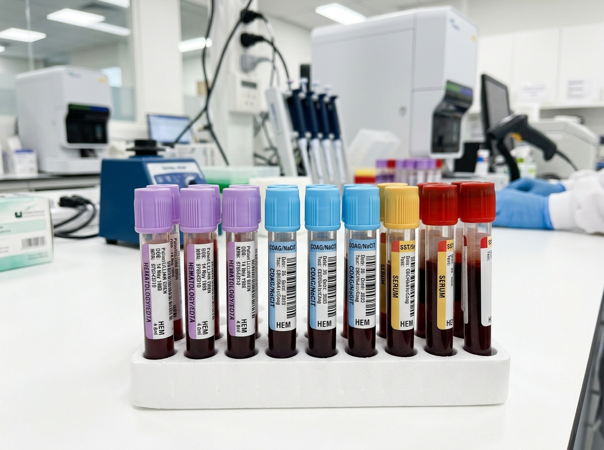

LABORATORY SERVICES
Professional Diagnostics You Can Trust
From routine blood testing to advanced health screening, our diagnostic services focus on accuracy and patient care.

24/7
Testing Lab

Blood Pathology Testing
Routine and advanced blood pathology services using state-of-the-art diagnostic equipment.
Service Details →
Diabetes & Metabolic Care
Precision screening, HbA1c tests, and complete diabetic panels for accurate monitoring.
Service Details →Cardiovascular Screening
Lipid profiles and cardiac marker analysis to evaluate and manage cardiovascular risks.
Service Details →
Allergy & Immunology
Comprehensive IgE testing for food, environmental, and seasonal allergens.
Service Details →

Vitamin & Nutrition Checks
Assess your micronutrient levels to optimize your diet and energy.
Service Details →Genetic Health Screening
Advanced DNA testing for hereditary conditions and personalized medicine.
Service Details →Pediatric Diagnostics
Gentle, accurate testing tailored specifically for infants and children.
Service Details →Senior Wellness Panels
Comprehensive geriatric health checks for proactive aging management.
Service Details →